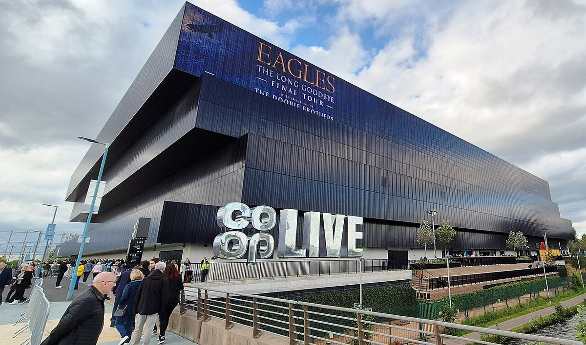

Daniel Dubois to Defend WBO Heavyweight Title Against Joseph Parker in Manchester
The heavyweight showdown at Co-op Live on 30 January 2027 settles unfinished business after their cancelled 2025 clash.

Daniel Dubois will make the second defence of his WBO heavyweight world title against former champion Joseph Parker at Manchester's Co-op Live arena on Saturday, 30 January 2027. Promoter Frank Warren and Queensberry Promotions officially announced the bout, billed as "New Year's Retribution", on 25 November 2026, with DAZN securing live broadcast coverage.
Dubois, 29, enters the contest with a record of 24 victories and three defeats, having stopped 23 opponents inside the distance. The London heavyweight claimed the WBO belt in May 2026 with an 11th-round technical knockout of Fabio Wardley at the same Manchester arena, before halting Wardley in two rounds in an immediate London rematch on 17 October. Dubois previously held the IBF world title, which he defended in September 2024 by knocking out Anthony Joshua in front of 96,000 spectators at Wembley Stadium.
Unfinished business from Riyadh

The January clash resurrects a contest originally scheduled for February 2025 in Riyadh, Saudi Arabia, where Dubois was slated to face Parker. Dubois withdrew during fight week due to illness, leaving Parker to face late substitute Martin Bakole, whom the New Zealander stopped in the second round.
Dubois subsequently vacated his interim belt before regaining world championship status against Wardley. "Daniel is entering his prime and when he is on his game it is hard to picture anybody beating him," Warren said in Queensberry's official fight announcement. "But Joseph has long promised to become world champion again, and now he gets his chance."
Parker's path back to a belt
Parker, 34, carries a professional record of 36 wins and four defeats, with 24 knockouts. The Auckland-born heavyweight held the WBO belt between December 2016 and March 2018, losing the title on points to Joshua in Cardiff. Parker re-established himself in title contention with consecutive decisions over former champions Deontay Wilder and Zhilei Zhang between late 2023 and early 2024.

The challenger has not fought since October 2025, when he suffered a late stoppage loss against Wardley. Parker was handed a provisional anti-doping suspension following that bout, which was formally rescinded in August 2026.
The heavyweight landscape in 2027
The Manchester date opens the 2027 calendar for a division where unified champion Oleksandr Usyk and IBF titlist Filip Hrgovic hold the remaining belts. The winner at Co-op Live is positioned to enter unification negotiations later in the year, with Dubois pursuing undisputed status and Parker seeking a second WBO title reign nine years after his first championship victory.